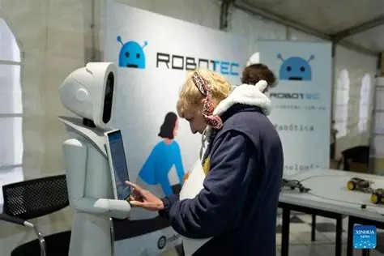

El MIT Technology Review anticipa las tecnologías que transformarán los próximos años
La lista de 2026 pone el foco en infraestructuras de gran escala, nuevas fuentes de energía, medicina de precisión y debates éticos.

El MIT Technology Review presentó su esperada selección de las diez tecnologías más disruptivas de 2026. El anuncio se realizó el martes 10 de marzo durante el festival SXSW, en Austin, Estados Unidos, uno de los principales encuentros internacionales dedicados a la tecnología, la innovación, el cine, la música y la cultura.
La lista de este año marca un cambio significativo respecto de ediciones anteriores. Aunque la inteligencia artificial continúa ocupando un lugar central, el análisis pone especial énfasis en infraestructuras de gran escala, nuevas fuentes de energía, medicina de precisión y tecnologías que plantean importantes debates éticos.
Entre los avances destacados aparecen las baterías de sodio, los reactores nucleares modulares, la edición genética de precisión, los centros de datos diseñados para inteligencia artificial y las estaciones espaciales comerciales. También se incluyen los sistemas de captura de carbono y los llamados compañeros de inteligencia artificial, capaces de mantener conversaciones y ofrecer apoyo emocional.
Según los editores de MIT Technology Review, la lista no busca simplemente anticipar tendencias, sino identificar desarrollos que ya alcanzaron la madurez suficiente para producir efectos concretos en la economía, la ciencia y la vida cotidiana.